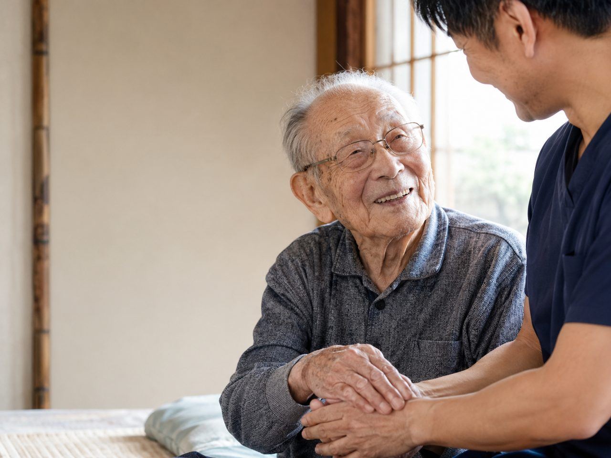

坐骨神経痛でお尻から足にかけて痛みやしびれが続くと、豊中市内の整形外科や治療院へ通うこと自体が重荷になっていきます。玄関の段差、車の乗り降り、待合室で座って待つ時間、どれも痛む腰や脚にこたえます。通うのがつらくなって、ケアそのものをあきらめかけている方に知っていただきたいのが、国家資格者が自宅へ伺う訪問鍼灸マッサージです。坐骨神経痛に鍼やお灸・手技でできること、先に医療機関へ相談すべきサイン、保険の対象や費用、豊中市での対応まで整理します。
かいつまんで言うと、坐骨神経痛で腰から足の痛み・しびれが長く続き、豊中市内の通院がつらくなった方は、自宅で訪問鍼灸マッサージを受けられます。慢性的な症状について医師が鍼やお灸を必要と認め、同意書を書いてくれれば、はり・きゅうの医療保険の対象です。費用は1回の施術が総額3,950円、自己負担は1割の方でおよそ395円。エリア内は別途の出張費がかからず同額です。ただし急に足に力が入らない、排尿・排便に異常があるときは、まず医療機関を受診してください。
豊中市で坐骨神経痛にお悩みの方へ
お尻の奥から太ももの裏、ふくらはぎへと電気が走るような痛みやしびれ。坐骨神経痛は、腰から脚へ伸びる長い神経が腰椎のあたりで圧迫されることで起こることが多く、片側の脚だけに症状が出るのが特徴です。椅子に長く座っていると重だるくなる、立ち上がる瞬間に鋭く痛む、朝の一歩目がつらい、そんな声を、豊中市の訪問先でよくうかがいます。阪急宝塚線の豊中・岡町・曽根・服部天神の周辺から、桃山台や緑地公園、少路といった北部まで、痛みで外出がおっくうになった方のご自宅へ、のびのび訪問施術院がお伺いしています。
坐骨神経痛は、痛む場所と原因の場所が離れていることがよくあります。脚がしびれていても、もとをたどれば腰にきっかけがある、というケースです。症状の成り立ちをもう少し詳しく知りたい方は、坐骨神経痛・長引く腰の痛みもあわせてご覧ください。
坐骨神経痛はなぜ悪化する？日常のなかの引き金
坐骨神経痛のつらさは、じっとしていても、動いてもつきまとうところにあります。長時間のデスクワークや車の運転で同じ姿勢が続くと、お尻の筋肉がこわばって神経を圧迫しやすくなります。逆に、歩き始めや中腰からの立ち上がりといった動作の切り替わりで、ズキッと走ることもあります。夜、布団に入ってから脚がうずいて眠りが浅くなる、という方も珍しくありません。
見落とされがちなのが、冷えとの関係です。冷えると筋肉は縮こまり、血のめぐりが落ちて、痛みやしびれを感じやすくなります。とくに冬場は、下半身の冷え対策が症状の波を左右することもあります。まずはご自身の痛みがどんなときに強まるのかを、日々の暮らしのなかで見つけていくことが、ケアの出発点になります。
鍼・お灸と手技で、腰から脚全体をていねいに
坐骨神経痛への施術では、痛む脚だけをみるのではなく、大もととなる腰や骨盤まわり、お尻の深い筋肉までを含めて全体をたどっていきます。鍼やお灸はこわばった筋肉をゆるめて血のめぐりを促し、手技（マッサージ）で神経の通り道の緊張をやわらげていく、そうして、脚に走る痛みやしびれを少しずつ和らげることを目指します。冷えの強い方には、お灸で腰やふくらはぎを温めながら進めることもあります。
ただし、鍼やお灸・マッサージは病気そのものを治すものではなく、体のつらさをやわらげ、暮らしやすさを取り戻していくためのものです。効き方には個人差があり、その日の体調や症状の重さによっても感じ方は変わります。ですから、一人ひとりの痛みの出方に合わせて、力加減や温め方を細かく調整しながら続けていくことを大切にしています。
保険で受けられる？費用のこと
坐骨神経痛は、医療保険（療養費）で受けられるはり・きゅうの対象6疾病、神経痛・リウマチ・頸肩腕症候群・五十肩・腰痛症・頸椎捻挫後遺症のうち、「神経痛」や「腰痛症」の枠で該当しうる症状です。かかりつけの医師が鍼やお灸を必要と認め、同意書を書いてくれれば、医療保険を使って施術を受けられます。要介護認定は不要で、介護保険の支給限度額とは別枠なので、併用できます。
費用の目安は、1回の施術で総額3,950円。自己負担は1割で約395円です。週2回のペースなら、1割の方で月およそ3,160円。エリア内は出張費なし・料金一律で、リハビリのような機能訓練も含みます。仕組みの詳しいところは料金はいくら？医療保険の自己負担額と仕組みをご覧ください。なお、同じ部位について医療保険のリハビリと鍼灸を同じ月に同時算定することはできません。
豊中市での訪問エリアと、始めるまでの流れ
のびのび訪問施術院は、阪急宝塚線沿いの豊中・岡町・曽根・服部天神から、大阪モノレールや北大阪急行でつながる千里中央・桃山台・緑地公園・少路、上新田や庄内のあたりまで、豊中市内を広くお伺いしています。痛みで駅までの道のりがこたえる、通院のたびに待合室で座っているのがつらい、そんな方こそ、住み慣れた我が家でケアを続けられる訪問施術が力になります。どこまで来てもらえるか気になる方は対応エリアはどこまで来てもらえる？を、豊中市での取り組み全般は豊中市の訪問鍼灸マッサージをご覧ください。
始めるには、まずお気軽にご相談ください。医師の同意書についてもこちらで取得のお手伝いをしますので、手続きが不安な方も心配いりません。ただし、急に足に力が入らない、排尿や排便に異常があるといった場合は、神経の異変のサインのことがあります。そうしたときは施術より先に、まず医療機関を受診してください。
訪問先でうかがったお話｜腰から足のこと
腰から足のケアでうかがっていると、「朝の起き抜け、動き始めがいちばんつらい」と話される方が多くいらっしゃいます。日中に体が動き出すと少し楽になる、という言い方をされる方もいます。
続けて受けている方からは、「おかげさまでだいぶ楽になりました」「前はもっと硬かったですもんね」といった声をうかがうことがあります。痛む場所が腰の上のほうから下のほうへ移ってきた、と変化を教えてくださる方もいます。感じ方には個人差があり、医師の治療やご自身の過ごし方と合わさって出てくるものです。
一方で、急に足に力が入らない、排尿・排便に異常があるといったときは、施術より先に医療機関を受診していただくようお伝えしています。
よくある質問
豊中市で坐骨神経痛でも保険を使えますか？
慢性的に続く坐骨神経痛について、かかりつけの医師が鍼やお灸での治療を必要と認めて同意書を書いてくれ、かつ通院がむずかしい状態であれば、医療保険の対象になります。豊中市のかかりつけ医にお願いでき、同意書の段取りは当院が整えます。まずは今の状態と通院の状況をお聞かせください。
だいぶ前から続く坐骨神経痛でも受けられますか？
急に起きた強い痛みではなく、慢性的に続いている坐骨神経痛が対象です。長く続いているからこそ、腰から脚全体をていねいにみるケアが向いています。ただし急に足に力が入らない、排尿・排便に異常があるといったときは、まず医療機関を受診してください。
坐骨神経痛のしびれも和らぎますか？
腰やお尻・脚のこわばった筋肉を和らげ、血のめぐりをうながすことで、しびれの感じ方や脚の重だるさが変わったと話される方がいます。神経を刺激している筋肉の緊張をゆるめること自体が助けになる場合もあります。効果の出方には個人差があります。
費用は1回いくらですか？出張費はかかりますか？
1回の施術が総額3,950円で、自己負担は割合の分だけです。1割の方でおよそ395円が目安です。別途の出張費（出張料・交通費）はかからず、エリア内はどこでも同額です。お支払いは月ごとにまとめてで、その月の内訳のわかる明細をお渡しします。
豊中市のどこまで来てもらえますか？
豊中市内全域に伺います。阪急宝塚線・北大阪急行の沿線の住宅地や千里方面など、市内であれば地域を問わず対応します。有料老人ホームやサービス付き高齢者向け住宅にお住まいの方のところにも伺えますので、お住まいの地域を教えてください。
要介護認定を受けていなくても受けられますか？
受けられます。訪問鍼灸マッサージは医師の同意にもとづく医療保険を使うもので、介護保険の要介護認定とは別の仕組みです。認定を受けていない方でも、医師が鍼やお灸を必要と認めれば対象になります。介護保険の限度額とも別枠です。
豊中市でひとり暮らしでも受けられますか？
はい。ひとり暮らしの方も受けられます。急なときのご家族などの連絡先をうかがい、安心して続けられるようにします。ご本人がお電話に出るのが難しければ、離れて暮らすご家族からのご相談だけでも構いません。
腰から足のケアは毎回同じ人が来ますか？
できるだけ同じ担当者が続けて伺います。腰からお尻、脚全体の状態を同じ目で続けて見られるので、変化に気づきやすく、その方に合わせたケアを重ねていけます。同じ曜日・時間帯で伺うことが多く、生活のリズムにも組み込みやすくなります。

摂津市で坐骨神経痛・腰から足の痛みにお悩みの方へ｜自宅で受けられる訪問鍼灸マッサージ
続きを読む
吹田市で坐骨神経痛・腰から足の痛みにお悩みの方へ｜自宅で受けられる訪問鍼灸マッサージ
続きを読む都島区で坐骨神経痛・腰から足の痛みにお悩みの方へ｜自宅で受けられる訪問鍼灸マッサージ
続きを読む
箕面市で坐骨神経痛・腰から足の痛みにお悩みの方へ｜自宅で受けられる訪問鍼灸マッサージ
続きを読む
北区（大阪市）で坐骨神経痛・腰から足のしびれにお悩みの方へ｜訪問鍼灸という選択肢
続きを読む